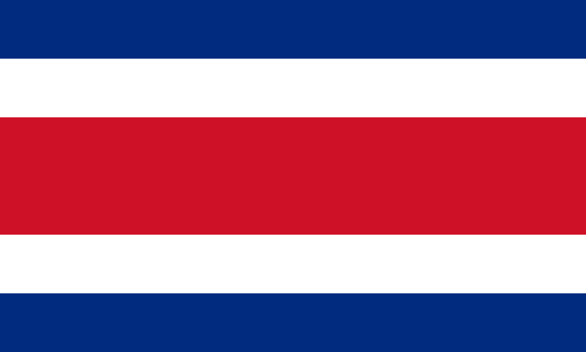

Simbolo patrios
- La guaria morada, flor nacional
- El yigüirro, ave nacional
- El árbol de Guanacaste, árbol nacional
- Bandera nacional 
- Escudo nacional

Según la historia, Cristóbal Colón desembarcó en una pequeña isla situada por Limón en 1502, y fue así como “descubrió” Costa Rica. Bueno, eso es lo que dice la historia española, pero no es en realidad lo que sucedió en este episodio de la historia de Costa Rica. En 1502, Cristóbal Colón desembarcó un poco perdido en Limón. ¡Y Costa Rica lo descubrió! Costa Rica ya existía. Costa Rica descubrió a los europeos en 1502! Limón se convirtió en el primer asentamiento español en la región, y en 1522 los colonos nombraron la tierra Costa Rica. Todo con la esperanza de que iban a encontrar oro en sus colinas, pero no lo hicieron. Cuando se hizo evidente que la costa rica era más pobre que sus vecinos, los colonos cambiaron su enfoque al desarrollo agrícola.
51,179,92 km²